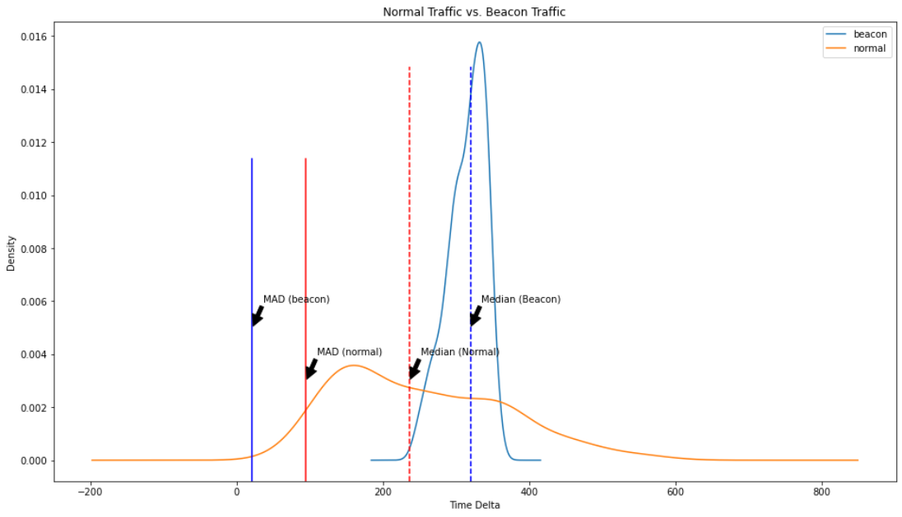
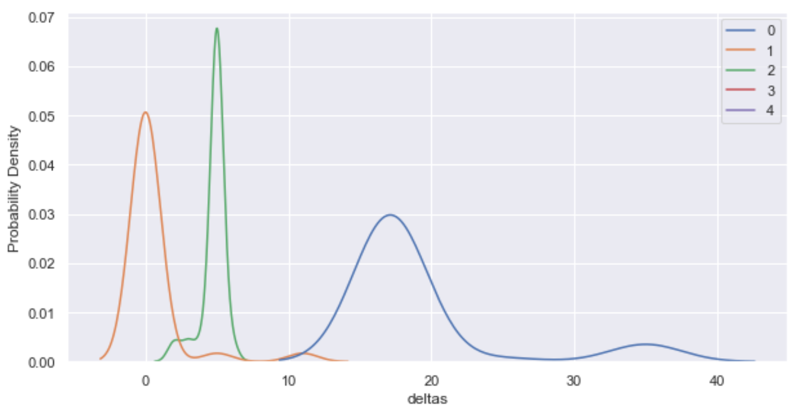

Mehmet Ergene @Cyb3rMonk¶
Project repo: https://github.com/Cyb3r-Monk/RITA-J
$whoami¶
Mehmet Ergene @Cyb3rMonk¶
Threat Hunter
Microsoft MVP
I ❤️ Anomalies & Behavior
GitHub: https://github.com/Cyb3r-Monk
Non-tech:
Lindy hopper
Handpan player
Statistics 101¶
Median:¶
The median of a finite list of numbers is the “middle” number, when those numbers are listed in order from smallest to greatest. For example, the median value of the data (1, 1, 2, 2, 4, 6, 9) is 2
Median Absolute Deviation:¶
MAD is a measurement of how wide or narrow the distribution of the values is. Consider the data (1, 1, 2, 2, 4, 6, 9). It has a median value of 2. The absolute deviations about 2 are (1, 1, 0, 0, 2, 4, 7) which in turn have a median value of 1 (because the sorted absolute deviations are (0, 0, 1, 1, 2, 4, 7)). So the median absolute deviation for this data is 1.
Skewness¶
Skewness is a measure of the asymmetry of the distribution of a real-valued random variable about its mean(average)

Regular user traffic vs. Beacon traffic¶
Sample beacon config:
Sleep |
Jitter |
Sleep interval |
CS Sleep interval |
|---|---|---|---|
300 seconds |
20% |
240-360 seconds |
240-300 seconds |
~300 connections in 24 hours.
*Sleep = time delta
Users randomly visit/refresh the same web page¶
Beacon traffic: 300 time deltas, each between 240-360 seconds¶
User traffic: 300 time deltas, each between 60-600 seconds (assumption)¶

Median of time delta of beacon traffic: 319
Median of time delta of user traffic: 236
MAD of time delta of beacon traffic: 21
MAD of time delta of user traffic: 95
MAD = Median absolute deviation
What does it mean?¶
Simply put:
If beacon traffic ==> uniform distribution and small Median Absolute Deviation
If user traffic ==> skewed distribution and large Median Absolute Deviation
How can we detect beaconing traffic using this method?¶
RITA (Real Intelligence Threat Analytics)¶
Sponsored by Active Countermeasures.
RITA is an open source framework for network traffic analysis.
The framework ingests Zeek Logs in TSV format, and currently supports the following major features:
Beaconing Detection: Search for signs of beaconing behavior in and out of your network
DNS Tunneling Detection Search for signs of DNS based covert channels
Blacklist Checking: Query blacklists to search for suspicious domains and hosts
How RITA works¶
RITA analyzes time delta size distribution and data size(sent bytes) distribution of a traffic between the same source and the destination and calculates an overall score for time delta and data size. For now, we’ll focus only on the time delta.
RITA calculates an overal score from 3 different scores based on time delta.
1. Time delta distribution¶
Perfect beacons should have symmetric delta time distribution. Bowley skewness measure is used to check symmetry.
2. Median Absolute Deviation of time delta¶
Perfect beacons should have very low dispersion around the median of their delta times. Median Absolute Deviation is used to check dispersion.
3. Connection Count¶
If the total connection count of traffic is high, it’s more likely a beacon and vice versa.
Implementing the algorithm using Jupyter notebook¶
RITA-J¶

RITA in Jupyter Notebook¶
https://github.com/Cyb3r-Monk/RITA-J
We will:
Implement RITA beacon analyzer in Jupyter Notebook
Use dataset shared by Ali Alwashali (@ali_alwashali)
Zeek logs from “malware-traffic-analysis.net” PCAP files, from 2013 to 2021
Suricata alerts triggered by the PCAP analysis
RITA beacon analyzer code: https://github.com/activecm/rita/blob/master/pkg/beacon/analyzer.go
Steps:¶
Prepare data
Group connections between the same hosts and aggregate timestamps into a list
Calculate connection count and remove short sessions
Sort the connection timestamp ascending
Calculate time deltas
Generate variables required for score calculation
Calculate the score
Validation with Suricata alerts
import math
import pandas as pd
import numpy as np
import warnings
# Disable warnings
warnings.filterwarnings('ignore')
warnings.simplefilter('ignore')
Preparing the Data¶
Loading the data¶
http_df = pd.read_csv('http-dataset.log', sep='\t')
http_df.info()
<class 'pandas.core.frame.DataFrame'>
RangeIndex: 108967 entries, 0 to 108966
Data columns (total 30 columns):
# Column Non-Null Count Dtype
--- ------ -------------- -----
0 ts 108967 non-null float64
1 uid 108967 non-null object
2 id.orig_h 108967 non-null object
3 id.orig_p 108967 non-null int64
4 id.resp_h 108967 non-null object
5 id.resp_p 108967 non-null int64
6 trans_depth 108967 non-null int64
7 method 108967 non-null object
8 host 108967 non-null object
9 uri 108967 non-null object
10 referrer 108967 non-null object
11 version 108967 non-null object
12 user_agent 108967 non-null object
13 origin 108949 non-null object
14 request_body_len 108967 non-null int64
15 response_body_len 108967 non-null int64
16 status_code 108967 non-null object
17 status_msg 108966 non-null object
18 info_code 108967 non-null object
19 info_msg 108967 non-null object
20 tags 108967 non-null object
21 username 108967 non-null object
22 password 108967 non-null object
23 proxied 108967 non-null object
24 orig_fuids 108967 non-null object
25 orig_filenames 108967 non-null object
26 orig_mime_types 108967 non-null object
27 resp_fuids 108967 non-null object
28 resp_filenames 108967 non-null object
29 resp_mime_types 108967 non-null object
dtypes: float64(1), int64(5), object(24)
memory usage: 24.9+ MB
Filtering Required Columns¶
df.loc[first_row_index:last_row_index , ['column1', 'column3']]
# get all rows and only the required colums
http_df = http_df.loc[:,['ts', 'id.orig_h', 'id.resp_h', 'id.resp_p', 'host', 'method']]
http_df.info()
<class 'pandas.core.frame.DataFrame'>
RangeIndex: 108967 entries, 0 to 108966
Data columns (total 6 columns):
# Column Non-Null Count Dtype
--- ------ -------------- -----
0 ts 108967 non-null float64
1 id.orig_h 108967 non-null object
2 id.resp_h 108967 non-null object
3 id.resp_p 108967 non-null int64
4 host 108967 non-null object
5 method 108967 non-null object
dtypes: float64(1), int64(1), object(4)
memory usage: 5.0+ MB
Fixing the Timestamp Column Type¶
http_df['ts'] = pd.to_datetime(http_df['ts'], unit='s')
http_df.head(2)
| ts | id.orig_h | id.resp_h | id.resp_p | host | method | |
|---|---|---|---|---|---|---|
| 0 | 2013-06-19 00:25:23.332814848 | 192.168.122.178 | 173.247.253.210 | 80 | www.insightcrime.org | GET |
| 1 | 2013-06-19 00:25:23.961981184 | 192.168.122.178 | 93.171.172.220 | 80 | 93.171.172.220 | GET |
Analysing the Data¶
Now the data is ready for statistical analysis.
Grouping the Connections¶
We can group the connections between the same hosts and aggregate the timestamps into a list. This way, we can use pd.Series().diff to easily calculate time deltas.
First, let’s group the traffic and aggregate.
# If you have a large dateset, using groupby and aggregate(list) might be slow.
http_df = http_df.groupby(['id.orig_h', 'id.resp_h', 'id.resp_p', 'host', 'method']).agg(list)
http_df.head(5)
| ts | |||||
|---|---|---|---|---|---|
| id.orig_h | id.resp_h | id.resp_p | host | method | |
| 1.8.31.101 | 104.168.98.206 | 80 | 104.168.98.206 | GET | [2019-08-31 13:07:54.941824, 2019-08-31 13:08:... |
| 13.107.4.50 | 80 | www.download.windowsupdate.com | GET | [2019-08-31 13:00:38.149271040] | |
| 147.135.15.186 | 80 | ip-api.com | POST | [2019-08-31 12:44:03.817665024] | |
| 170.238.117.187 | 8082 | 170.238.117.187 | POST | [2019-08-31 13:07:53.975055872, 2019-08-31 13:... | |
| 172.217.12.228 | 80 | www.google.com | GET | [2019-08-31 12:44:28.299268864, 2019-08-31 12:... |
Reseting the index¶
We need to reset the index to use all the columns since groupby operation indexes all the grouped columns together.
http_df.reset_index(inplace=True)
http_df.head(2)
| id.orig_h | id.resp_h | id.resp_p | host | method | ts | |
|---|---|---|---|---|---|---|
| 0 | 1.8.31.101 | 104.168.98.206 | 80 | 104.168.98.206 | GET | [2019-08-31 13:07:54.941824, 2019-08-31 13:08:... |
| 1 | 1.8.31.101 | 13.107.4.50 | 80 | www.download.windowsupdate.com | GET | [2019-08-31 13:00:38.149271040] |
Calculating Connection Count¶
Length of the timestamp list (‘ts’) = connection count (since we grouped the traffic and aggregated the timestamp into a list)
# create a new column 'conn_count', and for each row in the 'ts' column, apply a function and assign the returned value to the 'conn_count' column
http_df['conn_count'] = http_df['ts'].apply(lambda x: len(x))
http_df.head(2)
| id.orig_h | id.resp_h | id.resp_p | host | method | ts | conn_count | |
|---|---|---|---|---|---|---|---|
| 0 | 1.8.31.101 | 104.168.98.206 | 80 | 104.168.98.206 | GET | [2019-08-31 13:07:54.941824, 2019-08-31 13:08:... | 3 |
| 1 | 1.8.31.101 | 13.107.4.50 | 80 | www.download.windowsupdate.com | GET | [2019-08-31 13:00:38.149271040] | 1 |
Remove short sessions¶
Filter out traffic where the connection count is quite small
http_df = http_df.loc[http_df['conn_count'] > 20]
http_df.shape
(433, 7)
Sorting the Timestamps¶
Apply a lambda function to each row on the specified columns.
http_df['ts'] = http_df['ts'].apply(lambda x: sorted(x))
http_df.head(2)
| id.orig_h | id.resp_h | id.resp_p | host | method | ts | conn_count | |
|---|---|---|---|---|---|---|---|
| 41 | 10.0.0.102 | 46.29.183.211 | 8080 | 46.29.183.211 | POST | [2019-10-25 16:30:30.652640, 2019-10-25 16:30:... | 35 |
| 49 | 10.0.0.134 | 5.252.177.17 | 80 | 5.252.177.17 | GET | [2021-06-15 15:08:54.879534848, 2021-06-15 15:... | 25 |
Calculating Time Delta¶
Apply pd.Series.diff() to the ‘ts’ column, which is sorted, and assign the resulting list into a new column
# Convert list into a Series object, get time delta, convert the result back into a list and assign it to the 'deltas' column
http_df['deltas'] = http_df['ts'].apply(lambda x: pd.Series(x).diff().dt.seconds.dropna().tolist())
http_df.head(2)
| id.orig_h | id.resp_h | id.resp_p | host | method | ts | conn_count | deltas | |
|---|---|---|---|---|---|---|---|---|
| 41 | 10.0.0.102 | 46.29.183.211 | 8080 | 46.29.183.211 | POST | [2019-10-25 16:30:30.652640, 2019-10-25 16:30:... | 35 | [2.0, 831.0, 880.0, 8.0, 862.0, 3.0, 120.0, 80... |
| 49 | 10.0.0.134 | 5.252.177.17 | 80 | 5.252.177.17 | GET | [2021-06-15 15:08:54.879534848, 2021-06-15 15:... | 25 | [60.0, 60.0, 61.0, 60.0, 60.0, 60.0, 60.0, 60.... |
Generate variables¶
We need to generate the required variables to analyze time delta distribution, median absolute deviation, and connection count.
Variables for time delta dispersion¶
http_df['tsLow'] = http_df['deltas'].apply(lambda x: np.percentile(np.array(x), 20))
http_df['tsMid'] = http_df['deltas'].apply(lambda x: np.percentile(np.array(x), 50))
http_df['tsHigh'] = http_df['deltas'].apply(lambda x: np.percentile(np.array(x), 80))
http_df['tsBowleyNum'] = http_df['tsLow'] + http_df['tsHigh'] - 2*http_df['tsMid']
http_df['tsBowleyDen'] = http_df['tsHigh'] - http_df['tsLow']
http_df['tsSkew'] = http_df[['tsLow','tsMid','tsHigh','tsBowleyNum','tsBowleyDen']].apply(
lambda x: x['tsBowleyNum'] / x['tsBowleyDen'] if x['tsBowleyDen'] != 0 and x['tsMid'] != x['tsLow'] and x['tsMid'] != x['tsHigh'] else 0.0, axis=1
)
http_df['tsMadm'] = http_df['deltas'].apply(lambda x: np.median(np.absolute(np.array(x) - np.median(np.array(x)))))
http_df['tsConnDiv'] = http_df['ts'].apply(lambda x: (x[-1].to_pydatetime() - x[0].to_pydatetime()).seconds / 10)
http_df.head(3)
| id.orig_h | id.resp_h | id.resp_p | host | method | ts | conn_count | deltas | tsLow | tsMid | tsHigh | tsBowleyNum | tsBowleyDen | tsSkew | tsMadm | tsConnDiv | |
|---|---|---|---|---|---|---|---|---|---|---|---|---|---|---|---|---|
| 41 | 10.0.0.102 | 46.29.183.211 | 8080 | 46.29.183.211 | POST | [2019-10-25 16:30:30.652640, 2019-10-25 16:30:... | 35 | [2.0, 831.0, 880.0, 8.0, 862.0, 3.0, 120.0, 80... | 2.6 | 824.5 | 880.0 | -766.4 | 877.4 | -0.87349 | 74.5 | 1758.0 |
| 49 | 10.0.0.134 | 5.252.177.17 | 80 | 5.252.177.17 | GET | [2021-06-15 15:08:54.879534848, 2021-06-15 15:... | 25 | [60.0, 60.0, 61.0, 60.0, 60.0, 60.0, 60.0, 60.... | 60.0 | 60.0 | 60.0 | 0.0 | 0.0 | 0.00000 | 0.0 | 145.8 |
| 50 | 10.0.0.134 | 5.252.177.17 | 443 | 5.252.177.17 | GET | [2021-06-15 15:08:55.172674816, 2021-06-15 15:... | 1689 | [60.0, 0.0, 0.0, 0.0, 1.0, 0.0, 0.0, 0.0, 0.0,... | 0.0 | 0.0 | 0.0 | 0.0 | 0.0 | 0.00000 | 0.0 | 150.1 |
Calculating the score¶
http_df['tsSkewScore'] = 1.0 - abs(http_df['tsSkew'])
http_df['tsMadmScore'] = 1.0 - http_df['tsMadm']/30.0
http_df['tsMadmScore'] = http_df['tsMadmScore'].apply(lambda x: 0 if x < 0 else x)
http_df['tsConnCountScore'] = (http_df['conn_count']) / http_df['tsConnDiv']
http_df['tsConnCountScore'] = http_df['tsConnCountScore'].apply(lambda x: 1.0 if x > 1.0 else x)
http_df['tsScore'] = (((http_df['tsSkewScore'] + http_df['tsMadmScore'] + http_df['tsConnCountScore']) / 3.0) * 1000) / 1000
http_df.sort_values(by= 'tsScore', ascending=False, inplace=True, ignore_index=True)
http_df[['tsScore','conn_count','id.orig_h','id.resp_h','id.resp_p', 'host', 'method','deltas']].head(30)
| tsScore | conn_count | id.orig_h | id.resp_h | id.resp_p | host | method | deltas | |
|---|---|---|---|---|---|---|---|---|
| 0 | 1.0 | 21 | 192.168.204.145 | 69.174.53.234 | 80 | www.techo-bloc.com | GET | [0.0, 0.0, 0.0, 0.0, 0.0, 0.0, 0.0, 0.0, 0.0, ... |
| 1 | 1.0 | 81 | 192.168.204.148 | 188.95.248.45 | 80 | www.divxatope.com | GET | [1.0, 0.0, 0.0, 0.0, 0.0, 0.0, 0.0, 0.0, 0.0, ... |
| 2 | 1.0 | 21 | 10.6.25.102 | 62.76.188.61 | 80 | cerberhhyed5frqa.xmfir0.top | GET | [0.0, 0.0, 0.0, 0.0, 0.0, 0.0, 0.0, 0.0, 0.0, ... |
| 3 | 1.0 | 21 | 10.6.26.101 | 103.208.86.43 | 80 | cerberhhyed5frqa.raress.win | GET | [1.0, 1.0, 0.0, 0.0, 0.0, 0.0, 0.0, 0.0, 0.0, ... |
| 4 | 1.0 | 158 | 192.168.1.43 | 192.157.76.194 | 80 | www.knowyourteeth.com | GET | [0.0, 0.0, 0.0, 0.0, 0.0, 0.0, 0.0, 0.0, 0.0, ... |
| 5 | 1.0 | 106 | 10.6.28.101 | 50.233.80.221 | 80 | www.thetechhaus.com | GET | [0.0, 0.0, 0.0, 0.0, 0.0, 0.0, 0.0, 0.0, 0.0, ... |
| 6 | 1.0 | 26 | 192.168.1.138 | 188.116.34.246 | 80 | www1.v5ipk3gc8hug1du9459.4pu.com | GET | [0.0, 1.0, 0.0, 4.0, 0.0, 0.0, 0.0, 0.0, 0.0, ... |
| 7 | 1.0 | 24 | 192.168.204.151 | 67.215.234.26 | 80 | womenshealthhelp.net | GET | [0.0, 0.0, 0.0, 0.0, 0.0, 0.0, 0.0, 1.0, 0.0, ... |
| 8 | 1.0 | 36 | 192.168.204.151 | 64.12.245.3 | 80 | l.5min.com | GET | [0.0, 0.0, 0.0, 0.0, 0.0, 0.0, 0.0, 0.0, 5.0, ... |
| 9 | 1.0 | 26 | 192.168.204.150 | 184.72.236.84 | 80 | www.programmersheaven.com | GET | [0.0, 0.0, 0.0, 0.0, 0.0, 4.0, 0.0, 0.0, 0.0, ... |
| 10 | 1.0 | 25 | 192.168.204.148 | 23.215.61.58 | 80 | cache2-www.sportium.es | GET | [0.0, 0.0, 0.0, 0.0, 0.0, 0.0, 0.0, 0.0, 2.0, ... |
| 11 | 1.0 | 24 | 10.6.9.102 | 188.68.221.239 | 80 | snnmnkxdhflwgthqismb.com | POST | [0.0, 3.0, 0.0, 0.0, 0.0, 0.0, 0.0, 0.0, 1.0, ... |
| 12 | 1.0 | 24 | 192.168.1.107 | 66.45.56.109 | 80 | searchnet.blinkxcore.com | GET | [0.0, 0.0, 0.0, 1.0, 0.0, 0.0, 0.0, 0.0, 0.0, ... |
| 13 | 1.0 | 21 | 10.7.11.101 | 104.232.35.123 | 80 | pmenboeqhyrpvomq.132z80.top | GET | [7.0, 2.0, 0.0, 0.0, 0.0, 0.0, 0.0, 0.0, 0.0, ... |
| 14 | 1.0 | 22 | 10.7.16.101 | 208.95.112.1 | 80 | ip-api.com | GET | [0.0, 0.0, 0.0, 0.0, 0.0, 0.0, 0.0, 0.0, 0.0, ... |
| 15 | 1.0 | 87 | 192.168.204.148 | 216.206.30.10 | 80 | www.hindustantimes.com | GET | [0.0, 0.0, 0.0, 0.0, 0.0, 0.0, 0.0, 5.0, 0.0, ... |
| 16 | 1.0 | 33 | 192.168.1.107 | 5.45.65.142 | 80 | cc9966.com | GET | [0.0, 0.0, 14.0, 0.0, 0.0, 0.0, 0.0, 0.0, 0.0,... |
| 17 | 1.0 | 24 | 192.168.1.103 | 84.124.94.27 | 80 | musculosysexo.com | GET | [0.0, 0.0, 0.0, 0.0, 0.0, 0.0, 0.0, 0.0, 0.0, ... |
| 18 | 1.0 | 35 | 10.7.2.101 | 37.59.68.215 | 443 | 37.59.68.215 | GET | [8.0, 5.0, 5.0, 5.0, 5.0, 5.0, 5.0, 5.0, 5.0, ... |
| 19 | 1.0 | 23 | 192.168.1.107 | 212.83.191.241 | 8000 | du8siun.frapdays.com | GET | [0.0, 0.0, 0.0, 0.0, 0.0, 0.0, 0.0, 0.0, 0.0, ... |
| 20 | 1.0 | 3489 | 10.7.22.101 | 31.44.184.33 | 80 | 31.44.184.33 | GET | [1.0, 60.0, 60.0, 60.0, 60.0, 60.0, 60.0, 60.0... |
| 21 | 1.0 | 21 | 192.168.204.147 | 77.78.104.96 | 80 | xh2cqhmv5u4ifvht8j99d7r.consejeros.com.bo | GET | [2.0, 0.0, 0.0, 1.0, 0.0, 0.0, 0.0, 0.0, 0.0, ... |
| 22 | 1.0 | 11133 | 10.7.25.101 | 31.44.184.33 | 80 | 31.44.184.33 | GET | [0.0, 0.0, 0.0, 60.0, 0.0, 0.0, 0.0, 0.0, 0.0,... |
| 23 | 1.0 | 28 | 10.7.25.105 | 158.69.99.213 | 80 | www.ruthless.sexy | GET | [0.0, 0.0, 0.0, 0.0, 8.0, 2.0, 0.0, 0.0, 0.0, ... |
| 24 | 1.0 | 21 | 10.7.5.101 | 216.189.148.182 | 80 | 27lelchgcvs2wpm7.asd3r3.top | GET | [0.0, 0.0, 0.0, 0.0, 0.0, 0.0, 0.0, 0.0, 0.0, ... |
| 25 | 1.0 | 248 | 10.7.5.133 | 80.209.242.9 | 80 | 80.209.242.9 | GET | [0.0, 60.0, 0.0, 0.0, 0.0, 0.0, 0.0, 0.0, 0.0,... |
| 26 | 1.0 | 108 | 10.7.5.5 | 198.12.71.157 | 443 | 198.12.71.157 | GET | [6.0, 5.0, 5.0, 5.0, 5.0, 5.0, 5.0, 5.0, 5.0, ... |
| 27 | 1.0 | 22 | 192.168.204.147 | 67.20.109.225 | 80 | www.focusofswfltv.com | GET | [1.0, 0.0, 0.0, 0.0, 0.0, 0.0, 0.0, 1.0, 0.0, ... |
| 28 | 1.0 | 31 | 192.168.1.107 | 184.107.129.74 | 80 | 184.107.129.74 | GET | [1.0, 0.0, 0.0, 0.0, 0.0, 0.0, 0.0, 0.0, 0.0, ... |
| 29 | 1.0 | 49 | 192.168.1.106 | 174.120.21.157 | 80 | stockmarketsage.com | GET | [3.0, 0.0, 0.0, 0.0, 0.0, 0.0, 0.0, 0.0, 0.0, ... |
http_df.loc[http_df['tsScore'] < 1.0, ['tsScore','conn_count','id.orig_h','id.resp_h','id.resp_p', 'host', 'method','deltas']].head(20)
| tsScore | conn_count | id.orig_h | id.resp_h | id.resp_p | host | method | deltas | |
|---|---|---|---|---|---|---|---|---|
| 241 | 0.988889 | 21 | 172.16.2.169 | 193.33.134.7 | 80 | www.floordelig.nl | GET | [0.0, 0.0, 0.0, 0.0, 0.0, 0.0, 2.0, 3.0, 2.0, ... |
| 242 | 0.988889 | 31 | 192.168.204.230 | 31.184.192.202 | 80 | cd5c5c.com | GET | [6.0, 6.0, 4.0, 4.0, 5.0, 6.0, 3.0, 5.0, 5.0, ... |
| 243 | 0.988889 | 27 | 10.10.19.103 | 107.181.187.14 | 80 | mulseartmoretto.com | POST | [4.0, 3.0, 4.0, 3.0, 5.0, 6.0, 4.0, 3.0, 3.0, ... |
| 244 | 0.977778 | 30 | 172.16.223.15 | 5.149.222.125 | 80 | chanse-leaf.com | GET | [4.0, 2.0, 1.0, 0.0, 4.0, 0.0, 2.0, 3.0, 2.0, ... |
| 245 | 0.961131 | 25 | 172.16.3.122 | 172.217.1.162 | 80 | pagead2.googlesyndication.com | GET | [0.0, 0.0, 0.0, 1.0, 0.0, 0.0, 0.0, 104.0, 0.0... |
| 246 | 0.951081 | 25 | 10.3.14.134 | 217.12.208.17 | 80 | p27dokhpz2n7nvgr.1nmrtq.top | GET | [124.0, 0.0, 0.0, 1.0, 0.0, 1.0, 0.0, 1.0, 1.0... |
| 247 | 0.940928 | 26 | 172.16.3.122 | 104.36.115.111 | 80 | hbopenbid.pubmatic.com | POST | [1.0, 17.0, 11.0, 0.0, 4.0, 15.0, 9.0, 0.0, 6.... |
| 248 | 0.932826 | 21 | 10.6.25.102 | 84.38.183.162 | 80 | snnmnkxdhflwgthqismb.com | POST | [1.0, 2.0, 0.0, 0.0, 0.0, 0.0, 0.0, 0.0, 0.0, ... |
| 249 | 0.930946 | 31 | 192.168.122.52 | 119.160.243.163 | 80 | au.search.yahoo.com | GET | [11.0, 332.0, 0.0, 0.0, 0.0, 0.0, 0.0, 0.0, 0.... |
| 250 | 0.925826 | 39 | 10.0.1.95 | 35.198.166.240 | 80 | amellet.bit | POST | [41.0, 14.0, 1.0, 2.0, 2.0, 1.0, 1.0, 2.0, 2.0... |
| 251 | 0.925099 | 59 | 139.199.184.166 | 10.12.25.101 | 80 | - | - | [0.0, 0.0, 1.0, 0.0, 1.0, 350.0, 1.0, 0.0, 0.0... |
| 252 | 0.916667 | 27 | 10.1.25.119 | 191.234.5.80 | 80 | api.bing.com | GET | [0.0, 0.0, 0.0, 0.0, 0.0, 0.0, 0.0, 64.0, 0.0,... |
| 253 | 0.914016 | 21 | 172.16.3.122 | 74.119.119.69 | 80 | bidder.criteo.com | POST | [0.0, 0.0, 26.0, 0.0, 0.0, 27.0, 0.0, 0.0, 45.... |
| 254 | 0.904263 | 34 | 10.9.22.101 | 144.217.64.68 | 80 | fritas.cheddarmcmelt.top | POST | [454.0, 1.0, 1.0, 0.0, 0.0, 0.0, 0.0, 0.0, 0.0... |
| 255 | 0.889597 | 21 | 172.16.3.122 | 23.74.28.9 | 80 | as.casalemedia.com | GET | [16.0, 16.0, 15.0, 16.0, 15.0, 15.0, 15.0, 15.... |
| 256 | 0.889597 | 21 | 172.16.3.122 | 23.74.28.9 | 80 | as.casalemedia.com | POST | [16.0, 16.0, 15.0, 16.0, 15.0, 15.0, 15.0, 15.... |
| 257 | 0.887108 | 33 | 192.168.1.95 | 185.68.93.18 | 80 | 185.68.93.18 | POST | [11.0, 0.0, 16.0, 16.0, 16.0, 16.0, 16.0, 16.0... |
| 258 | 0.879795 | 25 | 192.168.122.52 | 119.160.254.197 | 80 | l.yimg.com | GET | [0.0, 2.0, 0.0, 5.0, 0.0, 0.0, 1.0, 0.0, 0.0, ... |
| 259 | 0.879659 | 40 | 192.168.1.109 | 69.16.143.110 | 80 | www.h8adioigud.su | POST | [2.0, 7.0, 2.0, 7.0, 2.0, 7.0, 2.0, 7.0, 2.0, ... |
| 260 | 0.877778 | 42 | 10.4.19.101 | 104.254.150.37 | 80 | ib.adnxs.com | GET | [3.0, 3.0, 1.0, 1.0, 5.0, 8.0, 0.0, 0.0, 1.0, ... |
Validation¶
suricata_df = pd.read_csv('suricata alerts.csv', sep=',')
suricata_df.loc[suricata_df['dest_ip'].isin(['107.181.187.14','5.199.162.3','23.74.28.9','35.198.166.240',
'193.33.134.7','31.184.192.202','5.149.222.125','185.180.198.24',
'173.254.231.111','139.60.161.74','192.254.79.71','185.68.93.18',
'69.16.143.110','37.59.68.215','31.44.184.33']),
['src_ip','dest_ip','alert.signature']].drop_duplicates()
| src_ip | dest_ip | alert.signature | |
|---|---|---|---|
| 1392 | 10.17.6.93 | 139.60.161.74 | ET MALWARE Cobalt Strike Beacon Observed |
| 1772 | 10.17.6.93 | 139.60.161.74 | ET HUNTING GENERIC SUSPICIOUS POST to Dotted Q... |
| 8151 | 10.5.26.4 | 5.199.162.3 | ET MALWARE Cobalt Strike Malleable C2 Profile ... |
| 11403 | 10.2.2.101 | 192.254.79.71 | ET MALWARE Cobalt Strike Beacon Observed |
| 11433 | 10.2.2.101 | 192.254.79.71 | ET JA3 Hash - [Abuse.ch] Possible Dridex |
| 13811 | 10.2.2.101 | 192.254.79.71 | ET HUNTING GENERIC SUSPICIOUS POST to Dotted Q... |
| 20123 | 10.2.2.101 | 192.254.79.71 | ET ADWARE_PUP Fun Web Products Spyware User-Ag... |
| 62016 | 10.7.25.101 | 31.44.184.33 | ET MALWARE Cobalt Strike Beacon Observed |
| 72576 | 10.7.25.101 | 31.44.184.33 | ET HUNTING GENERIC SUSPICIOUS POST to Dotted Q... |
| 73327 | 10.7.22.101 | 31.44.184.33 | ET HUNTING GENERIC SUSPICIOUS POST to Dotted Q... |
| 73329 | 10.7.22.101 | 31.44.184.33 | ET MALWARE Cobalt Strike Beacon Observed |
| 78256 | 10.0.90.109 | 31.44.184.33 | ET HUNTING GENERIC SUSPICIOUS POST to Dotted Q... |
| 78257 | 10.0.90.109 | 31.44.184.33 | ET MALWARE Cobalt Strike Beacon Observed |
| 78387 | 10.7.2.102 | 31.44.184.33 | ET MALWARE Cobalt Strike Beacon Observed |
| 78467 | 10.7.2.101 | 37.59.68.215 | ET MALWARE Suspected Powershell Empire GET M1 |
| 78468 | 10.7.2.101 | 37.59.68.215 | ET MALWARE Possible PowerShell Empire Activity... |
| 78545 | 10.7.2.101 | 37.59.68.215 | ET MALWARE Suspected Powershell Empire POST M1 |
| 78546 | 10.7.2.101 | 37.59.68.215 | ET POLICY HTTP traffic on port 443 (POST) |
| 90582 | 192.168.1.95 | 185.68.93.18 | ET HUNTING GENERIC SUSPICIOUS POST to Dotted Q... |
| 125008 | 10.14.106.192 | 173.254.231.111 | ET INFO HTTP Request to a *.top domain |
| 142742 | 172.16.165.153 | 31.184.192.202 | ET MALWARE Poweliks Clickfraud CnC M1 |
| 142764 | 172.16.165.153 | 31.184.192.202 | ET MALWARE Win32/Poweliks GET Request |
| 143818 | 192.168.204.230 | 31.184.192.202 | ET MALWARE Poweliks Clickfraud CnC M1 |
| 144482 | 192.168.204.230 | 31.184.192.202 | ET MALWARE Win32/Poweliks GET Request |
| 150584 | 192.168.1.109 | 69.16.143.110 | ET MALWARE Zbot POST Request to C2 |
| 150585 | 192.168.1.109 | 69.16.143.110 | ET POLICY HTTP Request to .su TLD (Soviet Unio... |
| 150613 | 192.168.1.109 | 69.16.143.110 | ET MALWARE Citadel Checkin |
Time Delta Distribution Graph of some Beacons¶
